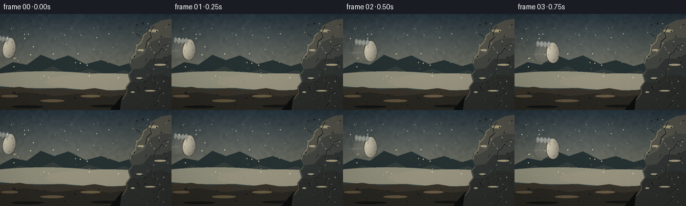
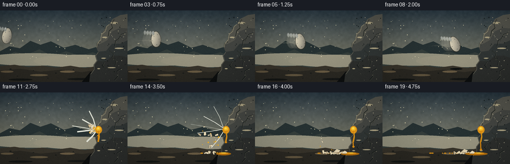
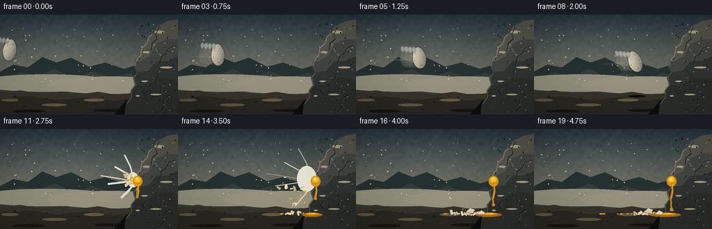
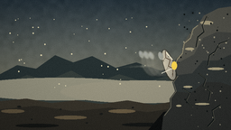

CODING AGENTS AS PIXEL WORLD MODELS
traex/GPT-5.6-Sol · phygen_131
点击播放 · 原生 RGB 像素
逐轮保存的候选
回放视频、检查图与代码变化。
每份候选均可单独播放。实际图片检查记录在下方工具轨迹中。
候选 01播放与检查图
点击播放 · 原生 RGB 像素


展开代码变化
--- 上一保存版本
+++ 本次保存版本
@@ -0,0 +1,310 @@
+from pathlib import Path
+import math
+import numpy as np
+from PIL import Image, ImageDraw, ImageFilter
+import artifact_io
+
+W, H, N = 256, 144, 20
+S = 3
+rng = np.random.default_rng(131)
+
+# ---------- utility ----------
+def sc(v):
+ if isinstance(v, (tuple, list)):
+ return tuple(int(round(x*S)) for x in v)
+ return int(round(v*S))
+
+def pts(seq):
+ return [(int(round(x*S)), int(round(y*S))) for x,y in seq]
+
+def line(draw, seq, fill, width=1):
+ draw.line(pts(seq), fill=fill, width=max(1, int(width*S)), joint='curve')
+
+def ellipse(draw, box, fill, outline=None, width=1):
+ draw.ellipse(sc(box), fill=fill, outline=outline, width=max(1,int(width*S)))
+
+def polygon(draw, seq, fill, outline=None):
+ draw.polygon(pts(seq), fill=fill, outline=outline)
+
+def smooth_polyline(draw, seq, fill, width):
+ line(draw, seq, fill, width)
+ for x,y in (seq[0], seq[-1]):
+ ellipse(draw, (x-width/2,y-width/2,x+width/2,y+width/2), fill)
+
+# ---------- static landscape ----------
+yy = np.arange(H)[:,None]
+xx = np.arange(W)[None,:]
+# Soft storm-blue to warm grey backdrop
+sky_top = np.array([38,52,61.], float)
+sky_bottom = np.array([130,126,104.], float)
+t = np.clip(yy/118, 0, 1)[...,None]
+base = sky_top*(1-t) + sky_bottom*t
+base = np.repeat(base, W, axis=1)
+# broad atmospheric glow around the flight corridor
+base += (12*np.exp(-(((xx-92)/90)**2 + ((yy-53)/45)**2)))[...,None]
+# fine texture generated from deterministic noise
+noise_small = rng.normal(0,1,(36,64))
+noise_im = Image.fromarray(np.uint8(np.clip(noise_small*30+128,0,255))).resize((W,H),Image.Resampling.BICUBIC)
+noise = (np.asarray(noise_im).astype(float)-128)/13
+base += noise[...,None]
+base = np.clip(base,0,255).astype(np.uint8)
+BASE_BG = Image.fromarray(base).resize((W*S,H*S),Image.Resampling.BICUBIC).convert('RGBA')
+
+# fixed stars/dust specks in air
+AIR_DUST = [(float(rng.uniform(4,180)), float(rng.uniform(18,104)), float(rng.uniform(.25,.7))) for _ in range(42)]
+
+# Main boulder silhouette and facets. Left edge is the collision surface.
+ROCK = [(256,7),(242,9),(235,15),(226,17),(219,28),(214,31),(211,42),
+ (203,48),(201,59),(195,65),(193,74),(197,83),(191,91),(194,101),
+ (188,109),(188,119),(181,128),(179,144),(256,144)]
+
+# Existing rock fissures (static; emphasize solidity, not impact damage)
+CRACKS = [
+ [(229,18),(224,28),(226,35),(219,41),(217,52)],
+ [(252,45),(243,48),(238,57),(232,61),(230,72)],
+ [(220,81),(228,87),(225,95),(233,101),(231,111)],
+ [(202,98),(210,103),(206,111),(213,118)],
+ [(244,116),(235,122),(237,132),(230,140)],
+]
+
+def draw_environment(im, frame):
+ d = ImageDraw.Draw(im, 'RGBA')
+ # distant ridges and mist
+ polygon(d, [(0,82),(19,72),(40,76),(61,61),(81,69),(102,62),(128,75),(151,69),(178,78),(205,70),(256,81),(256,123),(0,123)], (38,49,50,108))
+ polygon(d, [(0,94),(30,83),(53,89),(79,78),(105,92),(132,82),(161,91),(186,84),(215,95),(256,89),(256,125),(0,125)], (52,61,58,145))
+ # low fog bands
+ ellipse(d, (-35,86,167,111), (145,143,124,22))
+ ellipse(d, (67,89,250,114), (151,147,127,18))
+ # ground
+ polygon(d, [(0,112),(29,109),(57,114),(83,111),(112,115),(141,111),(170,116),(199,111),(226,115),(256,109),(256,144),(0,144)], (55,51,42,255))
+ polygon(d, [(0,121),(40,117),(82,123),(122,119),(164,124),(204,118),(256,121),(256,144),(0,144)], (42,40,34,240))
+ # soil streaks and stones
+ for x,y,rx,ry,c in [(14,123,13,2,(94,82,61,80)),(78,130,18,2,(97,85,63,62)),(135,123,15,2,(105,91,67,70)),(41,139,24,2,(20,22,20,130)),(160,138,25,2,(21,23,22,130))]:
+ ellipse(d,(x-rx,y-ry,x+rx,y+ry),c)
+ for x,y,r in [(21,118,2),(67,121,1.4),(112,126,1.8),(147,119,1.2),(35,132,1),(96,136,1.3)]:
+ ellipse(d,(x-r,y-r/2,x+r,y+r/2),(25,27,25,190))
+ # boulder shadow
+ polygon(d, [(181,124),(256,107),(256,144),(164,144)], (13,15,15,175))
+ # main boulder and layered facets
+ polygon(d, ROCK, (55,58,55,255))
+ polygon(d, [(256,7),(242,9),(226,17),(219,28),(214,31),(203,48),(201,59),(195,65),(198,69),(215,60),(225,42),(241,35),(256,36)], (84,84,76,255))
+ polygon(d, [(256,36),(241,35),(225,42),(215,60),(198,69),(193,74),(197,83),(213,81),(225,67),(241,67),(256,60)], (67,69,65,255))
+ polygon(d, [(256,60),(241,67),(225,67),(213,81),(197,83),(191,91),(194,101),(211,103),(226,91),(244,91),(256,95)], (48,53,52,255))
+ polygon(d, [(256,95),(244,91),(226,91),(211,103),(194,101),(188,109),(188,119),(181,128),(179,144),(256,144)], (44,46,44,255))
+ # bevel along collision edge catches light
+ line(d, [(219,28),(214,32),(211,42),(204,48),(202,59),(196,66),(194,74)], (143,137,112,105), 1.1)
+ line(d, [(197,84),(192,91),(195,101),(189,109),(189,119),(182,128)], (115,111,94,70), .7)
+ # rock highlights and mineral flecks
+ for x,y,rx,ry,a in [(229,25,7,2,45),(210,54,5,1.2,55),(239,76,9,1.3,38),(208,96,5,1,32),(224,115,8,1,30),(198,117,3,1,35)]:
+ ellipse(d,(x-rx,y-ry,x+rx,y+ry),(170,160,128,a))
+ rock_specks = [(rng.uniform(199,255),rng.uniform(15,137),rng.uniform(.3,1.0)) for _ in range(58)]
+ # deterministic per-call because reset-based-looking fixed positions from arithmetic cache substitute
+ rr = np.random.default_rng(177)
+ for _ in range(70):
+ x=float(rr.uniform(197,256)); y=float(rr.uniform(13,140)); r=float(rr.uniform(.25,.85))
+ col=(154,148,126,int(rr.uniform(22,65))) if rr.random()>.45 else (15,20,20,int(rr.uniform(25,65)))
+ ellipse(d,(x-r,y-r,x+r,y+r),col)
+ for crack in CRACKS:
+ line(d, crack, (17,23,23,155), 1.0)
+ # tiny lit lower edge
+ line(d, [(x+.7,y+.5) for x,y in crack], (126,121,101,28), .45)
+ # sparse airborne motes
+ for x,y,r in AIR_DUST:
+ phase = (frame*.17 + x*.03) % 1
+ ellipse(d,(x-r,y-r,x+r,y+r),(220,211,173,int(18+12*phase)))
+
+# ---------- egg sprite ----------
+def make_egg_sprite(angle=0, opacity=255, squash_x=1.0, squash_y=1.0, cracked=False):
+ pw,ph=42*S,52*S
+ mask=Image.new('L',(pw,ph),0); md=ImageDraw.Draw(mask)
+ cx,cy=pw/2,ph/2
+ poly=[]
+ # egg outline: pointed upper end, broad lower belly
+ for i in range(121):
+ a=2*math.pi*i/120
+ sy=math.sin(a)
+ # narrower top (sy<0), rounder lower half
+ radx=(10.0*(0.82+0.18*(sy+1)/2))*S*squash_x
+ x=cx+math.cos(a)*radx
+ y=cy+math.sin(a)*15.2*S*squash_y
+ poly.append((int(x),int(y)))
+ md.polygon(poly,fill=opacity)
+ arr=np.zeros((ph,pw,4),dtype=np.uint8)
+ # shaded ivory with left/top highlight and warm shaded rim
+ X=np.arange(pw)[None,:]; Y=np.arange(ph)[:,None]
+ u=(X-cx)/(12*S); v=(Y-cy)/(17*S)
+ shade=np.clip(.72 + .22*(-u) + .08*(-v) - .10*(u*u+v*v),.48,1.05)
+ arr[...,0]=np.clip(239*shade+12,0,255).astype(np.uint8)
+ arr[...,1]=np.clip(225*shade+15,0,255).astype(np.uint8)
+ arr[...,2]=np.clip(188*shade+22,0,255).astype(np.uint8)
+ arr[...,3]=np.asarray(mask)
+ spr=Image.fromarray(arr,'RGBA')
+ # thin dark shell edge, highlight glint, pores
+ edge=mask.filter(ImageFilter.MaxFilter(7))
+ rim=np.asarray(edge,dtype=np.int16)-np.asarray(mask,dtype=np.int16)
+ rim_im=Image.fromarray(np.uint8(np.clip(rim*.32,0,90)),'L')
+ rim_rgba=Image.new('RGBA',(pw,ph),(60,49,35,0)); rim_rgba.putalpha(rim_im)
+ spr=Image.alpha_composite(rim_rgba,spr)
+ sd=ImageDraw.Draw(spr,'RGBA')
+ sd.ellipse((13*S,9*S,18*S,18*S),fill=(255,255,238,100))
+ sd.ellipse((14.2*S,10*S,16.5*S,14*S),fill=(255,255,255,110))
+ for px,py in [(24,17),(27,26),(14,29),(22,37),(17,20),(29,32)]:
+ sd.ellipse((px*S-.45*S,py*S-.35*S,px*S+.45*S,py*S+.35*S),fill=(115,91,58,30))
+ if cracked:
+ line(sd,[(22,10),(20,17),(24,21),(20,27),(24,31),(21,39)],(82,61,42,220),.8)
+ line(sd,[(20,17),(15,20)],(82,61,42,180),.55)
+ line(sd,[(20,27),(16,31)],(82,61,42,180),.55)
+ if angle:
+ spr=spr.rotate(angle,resample=Image.Resampling.BICUBIC,expand=True)
+ return spr
+
+def paste_center(im,sprite,x,y):
+ im.alpha_composite(sprite,(int((x*S-sprite.width/2)),int((y*S-sprite.height/2))))
+
+# ---------- dynamics ----------
+# Shell pieces are fixed initial conditions, then simple ballistic arcs.
+frag_rng=np.random.default_rng(971)
+FRAGS=[]
+for i in range(18):
+ ang=frag_rng.uniform(math.radians(120),math.radians(250)) # predominantly away from rock to left
+ speed=frag_rng.uniform(13,47)
+ vx=math.cos(ang)*speed
+ vy=math.sin(ang)*speed
+ # add several pieces kicking upward and sideways
+ if i<5:
+ vx=frag_rng.uniform(-49,-21); vy=frag_rng.uniform(-47,-19)
+ FRAGS.append(dict(vx=vx,vy=vy,size=frag_rng.uniform(1.2,3.5),rot=frag_rng.uniform(0,360),spin=frag_rng.uniform(-190,190),tone=frag_rng.uniform(0,1)))
+DROP_DATA=[]
+for i in range(15):
+ DROP_DATA.append((frag_rng.uniform(-46,-8),frag_rng.uniform(-44,20),frag_rng.uniform(.45,1.65)))
+
+def draw_motion_blur(im, x,y,angle,frame):
+ layer=Image.new('RGBA',im.size,(0,0,0,0)); d=ImageDraw.Draw(layer,'RGBA')
+ # long velocity streaks taper toward the egg
+ for j in range(5):
+ off=17+j*6
+ line(d,[(x-off-12,y+3+j*.4),(x-off+3,y+1)],(226,220,193,max(8,34-j*5)),max(.4,2.2-j*.3))
+ # faint translucent previous silhouettes
+ for j in (3,2,1):
+ ghost=make_egg_sprite(angle=angle-j*2,opacity=14+5*j,squash_x=1.0,squash_y=1.0)
+ paste_center(layer,ghost,x-j*6.0,y-j*.4)
+ layer=layer.filter(ImageFilter.GaussianBlur(.65*S))
+ im.alpha_composite(layer)
+
+def draw_intact_egg(im,frame):
+ # accelerating, shallow descending throw. Contact around (194,73).
+ progress=frame/10.0
+ x=14 + 169*(progress**1.13)
+ y=51 + 20*progress + 1.6*math.sin(progress*math.pi)
+ angle=-9 + 37*progress
+ draw_motion_blur(im,x,y,angle,frame)
+ spr=make_egg_sprite(angle=angle, opacity=255)
+ paste_center(im,spr,x,y)
+ # tight cast shadow directly beneath late in flight
+ if frame>=6:
+ d=ImageDraw.Draw(im,'RGBA')
+ ellipse(d,(x-10,116,x+15,119),(10,13,13,int(20+frame*3)))
+
+# impact and aftermath layers
+def draw_impact(im,frame):
+ d=ImageDraw.Draw(im,'RGBA')
+ if frame==10:
+ # compressed shell at exact collision, contact flash, first hairline failure
+ draw_motion_blur(im,184.2,71.0,28,frame)
+ spr=make_egg_sprite(angle=18, opacity=255, squash_x=.58, squash_y=1.12, cracked=True)
+ paste_center(im,spr,187.2,72)
+ # tiny first jet from contact seam
+ line(d,[(191,66),(184,58)],(244,234,207,185),1.2)
+ line(d,[(192,75),(179,81)],(246,238,216,145),1.0)
+ ellipse(d,(190,68,196,77),(248,212,80,110))
+ return
+
+ k=frame-10
+ tau=k*.25
+ # Albumen explosion: translucent radial ribbons, strongest immediately after impact
+ burst=max(0,1-(k-1)/5)
+ if k<=5:
+ ribbons=[((193,72),(169-4*k,56-2*k),2.3),((192,74),(160-5*k,78+1*k),2.8),
+ ((194,76),(176-2*k,95+4*k),2.5),((192,70),(181-2*k,40-3*k),1.5),
+ ((191,75),(151-6*k,68-1*k),1.2)]
+ for a,b,wid in ribbons:
+ mid=((a[0]+b[0])/2+2,(a[1]+b[1])/2)
+ line(d,[a,mid,b],(228,230,217,int(105*burst)),wid*burst+.5)
+ # white mist halo
+ ellipse(d,(187-4*k,65-3*k,199,82+2*k),(232,229,211,int(40*burst)))
+ # yolk strike mark on hard rock, increasing downward drip
+ ellipse(d,(190.5,67.5,204.5,82.5),(220,146,24,200))
+ ellipse(d,(193,69,202,77),(249,188,39,235))
+ ellipse(d,(195,70,199,74),(255,220,78,165))
+ drip_len=min(37,4+k*4.5)
+ # narrowing viscous run down the face
+ smooth_polyline(d,[(198,78),(199,88),(196.8,99),(197.5,78+drip_len)],(211,133,18,210),2.6)
+ smooth_polyline(d,[(199,79),(199.6,90),(198,99)],(255,188,33,150),.8)
+ ellipse(d,(195.4,76+drip_len,199.7,80+drip_len),(218,139,19,210))
+
+ # yolk droplets, ballistic, many flatten against ground later
+ for i,(vx,vy,r) in enumerate(DROP_DATA):
+ tt=tau
+ x=191+vx*tt
+ y=73+vy*tt+38*tt*tt
+ if y<123:
+ ellipse(d,(x-r,y-r,x+r,y+r),(236,166,28,215))
+ if r>1.1: ellipse(d,(x-r*.35,y-r*.55,x+r*.15,y-r*.05),(255,218,78,120))
+ else:
+ x=max(8,min(186,x)); ry=max(.45,r*.36)
+ ellipse(d,(x-r*1.8,121.5-ry,x+r*1.8,122.5+ry),(218,144,22,175))
+
+ # shell fragments fly outward then settle/bounce on terrain
+ for i,f in enumerate(FRAGS):
+ tt=tau
+ x=190+f['vx']*tt
+ y=72+f['vy']*tt+42*tt*tt
+ # inelastic floor with tiny visual separation between pieces
+ if y>121.5:
+ x=190+f['vx']*min(tt,.95+i*.018)
+ y=121.2+(i%3)*.42
+ if x<-4 or x>258: continue
+ sz=f['size']; a=math.radians(f['rot']+f['spin']*tt)
+ ux,uy=math.cos(a)*sz,math.sin(a)*sz
+ vx2,vy2=-math.sin(a)*sz*.55,math.cos(a)*sz*.55
+ p=[(x+ux+vx2,y+uy+vy2),(x-ux+vx2,y-uy+vy2),(x-ux-vx2*.5,y-uy-vy2*.5),(x+ux-vx2,y+uy-vy2)]
+ col=(235,220,183,245) if f['tone']>.3 else (197,177,139,245)
+ polygon(d,p,col)
+ line(d,[p[0],p[1]],(255,247,220,170),.45)
+ line(d,[p[2],p[3]],(76,59,39,160),.45)
+
+ # spreading wet pool below rock, seen increasingly in late aftermath
+ if k>=4:
+ grow=min(1,(k-3)/5)
+ ellipse(d,(181-15*grow,120.2,207+4*grow,126.2),(178,110,15,int(120+60*grow)))
+ ellipse(d,(185-10*grow,120.5,202+2*grow,123.7),(238,157,25,int(150+55*grow)))
+ ellipse(d,(188,120.8,198,122.4),(255,207,60,100))
+ # loose shell halves near base become readable once settled
+ if k>=6:
+ polygon(d,[(158,119),(164,114),(171,116),(168,121),(161,122)],(226,211,177,240))
+ line(d,[(158,119),(164,121),(168,121)],(83,62,41,180),.7)
+ polygon(d,[(174,123),(180,117),(185,120),(183,123)],(239,224,188,235))
+ line(d,[(174,123),(183,123)],(75,58,41,150),.6)
+
+
+def render_frame(frame):
+ im=BASE_BG.copy()
+ draw_environment(im,frame)
+ if frame<10:
+ draw_intact_egg(im,frame)
+ else:
+ draw_impact(im,frame)
+ # atmospheric vignette and restrained cinematic grade
+ arr=np.asarray(im.convert('RGB').resize((W,H),Image.Resampling.LANCZOS)).astype(np.float32)
+ Y,X=np.mgrid[0:H,0:W]
+ vig=1-0.18*np.clip(((X-W/2)/(W*.72))**2+((Y-H/2)/(H*.72))**2,0,1)
+ arr*=vig[...,None]
+ # subtle deterministic film grain (same scene, slight sensor variation)
+ gr=np.random.default_rng(4000+frame).normal(0,1.15,(H,W,1))
+ arr=np.clip(arr+gr,0,255).astype(np.uint8)
+ return arr
+
+frames=np.stack([render_frame(i) for i in range(N)],axis=0)
+assert frames.shape==(20,144,256,3) and frames.dtype==np.uint8
+artifact_io.save(frames, Path(__file__).resolve().parent)
+print('saved',frames.shape,frames.dtype)
候选 02播放与检查图
点击播放 · 原生 RGB 像素

展开代码变化
--- 上一保存版本
+++ 本次保存版本
@@ -230,8 +230,12 @@
for a,b,wid in ribbons:
mid=((a[0]+b[0])/2+2,(a[1]+b[1])/2)
line(d,[a,mid,b],(228,230,217,int(105*burst)),wid*burst+.5)
- # white mist halo
- ellipse(d,(187-4*k,65-3*k,199,82+2*k),(232,229,211,int(40*burst)))
+ # Irregular atomized albumen near the contact point. Keep this angular
+ # rather than circular so it cannot be mistaken for a second egg.
+ if k <= 3:
+ polygon(d,[(191,68),(187-2*k,63-k),(190,71),(180-3*k,72+k),
+ (191,75),(184-2*k,83+2*k),(194,77),(196,71)],
+ (205,207,195,int(34*burst)))
# yolk strike mark on hard rock, increasing downward drip
ellipse(d,(190.5,67.5,204.5,82.5),(220,146,24,200))
ellipse(d,(193,69,202,77),(249,188,39,235))
可观测工具轨迹
实际执行的命令与返回图片。
命令 1exit 0
/bin/bash -lc "cat prompt.txt && printf '\\n---RULES---\\n' && cat GENERATION_RULES.md && printf '\\n---SPEC---\\n' && cat task_spec.json"
命令 2exit 0
/bin/bash -lc "find . -maxdepth 2 -type f -printf '%p\\n' | sort"
命令 3exit 0
/bin/bash -lc "sed -n '1,240p' artifact_io.py"
命令 4exit 0
/bin/bash -lc "python - <<'PY'
import PIL, numpy
print('PIL',PIL.__version__,'numpy',numpy.__version__)
PY"命令 5exit 0
/bin/bash -lc "cat > generate.py <<'PY'
from pathlib import Path
import math
import numpy as np
from PIL import Image, ImageDraw, ImageFilter
import artifact_io
W, H, N = 256, 144, 20
S = 3
rng = np.random.default_rng(131)
# ---------- utility ----------
def sc(v):
if isinstance(v, (tuple, list)):
return tuple(int(round(x*S)) for x in v)
return int(round(v*S))
def pts(seq):
return [(int(round(x*S)), int(round(y*S))) for x,y in seq]
def line(draw, seq, fill, width=1):
draw.line(pts(seq), fill=fill, width=max(1, int(width*S)), joint='curve')
def ellipse(draw, box, fill, outline=None, width=1):
draw.ellipse(sc(box), fill=fill, outline=outline, width=max(1,int(width*S)))
def polygon(draw, seq, fill, outline=None):
draw.polygon(pts(seq), fill=fill, outline=outline)
def smooth_polyline(draw, seq, fill, width):
line(draw, seq, fill, width)
for x,y in (seq[0], seq[-1]):
ellipse(draw, (x-width/2,y-width/2,x+width/2,y+width/2), fill)
# ---------- static landscape ----------
yy = np.arange(H)[:,None]
xx = np.arange(W)[None,:]
# Soft storm-blue to warm grey backdrop
sky_top = np.array([38,52,61.], float)
sky_bottom = np.array([130,126,104.], float)
t = np.clip(yy/118, 0, 1)[...,None]
base = sky_top*(1-t) + sky_bottom*t
base = np.repeat(base, W, axis=1)
# broad atmospheric glow around the flight corridor
base += (12*np.exp(-(((xx-92)/90)**2 + ((yy-53)/45)**2)))[...,None]
# fine texture generated from deterministic noise
noise_small = rng.normal(0,1,(36,64))
noise_im = Image.fromarray(np.uint8(np.clip(noise_small*30+128,0,255))).resize((W,H),Image.Resampling.BICUBIC)
noise = (np.asarray(noise_im).astype(float)-128)/13
base += noise[...,None]
base = np.clip(base,0,255).astype(np.uint8)
BASE_BG = Image.fromarray(base).resize((W*S,H*S),Image.Resampling.BICUBIC).convert('RGBA')
# fixed stars/dust specks in air
AIR_DUST = [(float(rng.uniform(4,180)), float(rng.uniform(18,104)), float(rng.uniform(.25,.7))) for _ in range(42)]
# Main boulder silhouette and facets. Left edge is the collision surface.
ROCK = [(256,7),(242,9),(235,15),(226,17),(219,28),(214,31),(211,42),
(203,48),(201,59),(195,65),(193,74),(197,83),(191,91),(194,101),
(188,109),(188,119),(181,128),(179,144),(256,144)]
# Existing rock fissures (static; emphasize solidity, not impact damage)
CRACKS = [
[(229,18),(224,28),(226,35),(219,41),(217,52)],
[(252,45),(243,48),(238,57),(232,61),(230,72)],
[(220,81),(228,87),(225,95),(233,101),(231,111)],
[(202,98),(210,103),(206,111),(213,118)],
[(244,116),(235,122),(237,132),(230,140)],
]
def draw_environment(im, frame):
d = ImageDraw.Draw(im, 'RGBA')
# distant ridges and mist
polygon(d, [(0,82),(19,72),(40,76),(61,61),(81,69),(102,62),(128,75),(151,69),(178,78),(205,70),(256,81),(256,123),(0,123)], (38,49,50,108))
polygon(d, [(0,94),(30,83),(53,89),(79,78),(105,92),(132,82),(161,91),(186,84),(215,95),(256,89),(256,125),(0,125)], (52,61,58,145))
# low fog bands
ellipse(d, (-35,86,167,111), (145,143,124,22))
ellipse(d, (67,89,250,114), (151,147,127,18))
# ground
polygon(d, [(0,112),(29,109),(57,114),(83,111),(112,115),(141,111),(170,116),(199,111),(226,115),(256,109),(256,144),(0,144)], (55,51,42,255))
polygon(d, [(0,121),(40,117),(82,123),(122,119),(164,124),(204,118),(256,121),(256,144),(0,144)], (42,40,34,240))
# soil streaks and stones
for x,y,rx,ry,c in [(14,123,13,2,(94,82,61,80)),(78,130,18,2,(97,85,63,62)),(135,123,15,2,(105,91,67,70)),(41,139,24,2,(20,22,20,130)),(160,138,25,2,(21,23,22,130))]:
ellipse(d,(x-rx,y-ry,x+rx,y+ry),c)
for x,y,r in [(21,118,2),(67,121,1.4),(112,126,1.8),(147,119,1.2),(35,132,1),(96,136,1.3)]:
ellipse(d,(x-r,y-r/2,x+r,y+r/2),(25,27,25,190))
# boulder shadow
polygon(d, [(181,124),(256,107),(256,144),(164,144)], (13,15,15,175))
# main boulder and layered facets
polygon(d, ROCK, (55,58,55,255))
polygon(d, [(256,7),(242,9),(226,17),(219,28),(214,31),(203,48),(201,59),(195,65),(198,69),(215,60),(225,42),(241,35),(256,36)], (84,84,76,255))
polygon(d, [(256,36),(241,35),(225,42),(215,60),(198,69),(193,74),(197,83),(213,81),(225,67),(241,67),(256,60)], (67,69,65,255))
polygon(d, [(256,60),(241,67),(225,67),(213,81),(197,83),(191,91),(194,101),(211,103),(226,91),(244,91),(256,95)], (48,53,52,255))
polygon(d, [(256,95),(244,91),(226,91),(211,103),(194,101),(188,109),(188,119),(181,128),(179,144),(256,144)], (44,46,44,255))
# bevel along collision edge catches light
line(d, [(219,28),(214,32),(211,42),(204,48),(202,59),(196,66),(194,74)], (143,137,112,105), 1.1)
line(d, [(197,84),(192,91),(195,101),(189,109),(189,119),(182,128)], (115,111,94,70), .7)
# rock highlights and mineral flecks
for x,y,rx,ry,a in [(229,25,7,2,45),(210,54,5,1.2,55),(239,76,9,1.3,38),(208,96,5,1,32),(224,115,8,1,30),(198,117,3,1,35)]:
ellipse(d,(x-rx,y-ry,x+rx,y+ry),(170,160,128,a))
rock_specks = [(rng.uniform(199,255),rng.uniform(15,137),rng.uniform(.3,1.0)) for _ in range(58)]
# deterministic per-call because reset-based-looking fixed positions from arithmetic cache substitute
rr = np.random.default_rng(177)
for _ in range(70):
x=float(rr.uniform(197,256)); y=float(rr.uniform(13,140)); r=float(rr.uniform(.25,.85))
col=(154,148,126,int(rr.uniform(22,65))) if rr.random()>.45 else (15,20,20,int(rr.uniform(25,65)))
ellipse(d,(x-r,y-r,x+r,y+r),col)
for crack in CRACKS:
line(d, crack, (17,23,23,155), 1.0)
# tiny lit lower edge
line(d, [(x+.7,y+.5) for x,y in crack], (126,121,101,28), .45)
# sparse airborne motes
for x,y,r in AIR_DUST:
phase = (frame*.17 + x*.03) % 1
ellipse(d,(x-r,y-r,x+r,y+r),(220,211,173,int(18+12*phase)))
# ---------- egg sprite ----------
def make_egg_sprite(angle=0, opacity=255, squash_x=1.0, squash_y=1.0, cracked=False):
pw,ph=42*S,52*S
mask=Image.new('L',(pw,ph),0); md=ImageDraw.Draw(mask)
cx,cy=pw/2,ph/2
poly=[]
# egg outline: pointed upper end, broad lower belly
for i in range(121):
a=2*math.pi*i/120
sy=math.sin(a)
# narrower top (sy<0), rounder lower half
radx=(10.0*(0.82+0.18*(sy+1)/2))*S*squash_x
x=cx+math.cos(a)*radx
y=cy+math.sin(a)*15.2*S*squash_y
poly.append((int(x),int(y)))
md.polygon(poly,fill=opacity)
arr=np.zeros((ph,pw,4),dtype=np.uint8)
# shaded ivory with left/top highlight and warm shaded rim
X=np.arange(pw)[None,:]; Y=np.arange(ph)[:,None]
u=(X-cx)/(12*S); v=(Y-cy)/(17*S)
shade=np.clip(.72 + .22*(-u) + .08*(-v) - .10*(u*u+v*v),.48,1.05)
arr[...,0]=np.clip(239*shade+12,0,255).astype(np.uint8)
arr[...,1]=np.clip(225*shade+15,0,255).astype(np.uint8)
arr[...,2]=np.clip(188*shade+22,0,255).astype(np.uint8)
arr[...,3]=np.asarray(mask)
spr=Image.fromarray(arr,'RGBA')
# thin dark shell edge, highlight glint, pores
edge=mask.filter(ImageFilter.MaxFilter(7))
rim=np.asarray(edge,dtype=np.int16)-np.asarray(mask,dtype=np.int16)
rim_im=Image.fromarray(np.uint8(np.clip(rim*.32,0,90)),'L')
rim_rgba=Image.new('RGBA',(pw,ph),(60,49,35,0)); rim_rgba.putalpha(rim_im)
spr=Image.alpha_composite(rim_rgba,spr)
sd=ImageDraw.Draw(spr,'RGBA')
sd.ellipse((13*S,9*S,18*S,18*S),fill=(255,255,238,100))
sd.ellipse((14.2*S,10*S,16.5*S,14*S),fill=(255,255,255,110))
for px,py in [(24,17),(27,26),(14,29),(22,37),(17,20),(29,32)]:
sd.ellipse((px*S-.45*S,py*S-.35*S,px*S+.45*S,py*S+.35*S),fill=(115,91,58,30))
if cracked:
line(sd,[(22,10),(20,17),(24,21),(20,27),(24,31),(21,39)],(82,61,42,220),.8)
line(sd,[(20,17),(15,20)],(82,61,42,180),.55)
line(sd,[(20,27),(16,31)],(82,61,42,180),.55)
if angle:
spr=spr.rotate(angle,resample=Image.Resampling.BICUBIC,expand=True)
return spr
def paste_center(im,sprite,x,y):
im.alpha_composite(sprite,(int((x*S-sprite.width/2)),int((y*S-sprite.height/2))))
# ---------- dynamics ----------
# Shell pieces are fixed initial conditions, then simple ballistic arcs.
frag_rng=np.random.default_rng(971)
FRAGS=[]
for i in range(18):
ang=frag_rng.uniform(math.radians(120),math.radians(250)) # predominantly away from rock to left
speed=frag_rng.uniform(13,47)
vx=math.cos(ang)*speed
vy=math.sin(ang)*speed
# add several pieces kicking upward and sideways
if i<5:
vx=frag_rng.uniform(-49,-21); vy=frag_rng.uniform(-47,-19)
FRAGS.append(dict(vx=vx,vy=vy,size=frag_rng.uniform(1.2,3.5),rot=frag_rng.uniform(0,360),spin=frag_rng.uniform(-190,190),tone=frag_rng.uniform(0,1)))
DROP_DATA=[]
for i in range(15):
DROP_DATA.append((frag_rng.uniform(-46,-8),frag_rng.uniform(-44,20),frag_rng.uniform(.45,1.65)))
def draw_motion_blur(im, x,y,angle,frame):
layer=Image.new('RGBA',im.size,(0,0,0,0)); d=ImageDraw.Draw(layer,'RGBA')
# long velocity streaks taper toward the egg
for j in range(5):
off=17+j*6
line(d,[(x-off-12,y+3+j*.4),(x-off+3,y+1)],(226,220,193,max(8,34-j*5)),max(.4,2.2-j*.3))
# faint translucent previous silhouettes
for j in (3,2,1):
ghost=make_egg_sprite(angle=angle-j*2,opacity=14+5*j,squash_x=1.0,squash_y=1.0)
paste_center(layer,ghost,x-j*6.0,y-j*.4)
layer=layer.filter(ImageFilter.GaussianBlur(.65*S))
im.alpha_composite(layer)
def draw_intact_egg(im,frame):
# accelerating, shallow descending throw. Contact around (194,73).
progress=frame/10.0
x=14 + 169*(progress**1.13)
y=51 + 20*progress + 1.6*math.sin(progress*math.pi)
angle=-9 + 37*progress
draw_motion_blur(im,x,y,angle,frame)
spr=make_egg_sprite(angle=angle, opacity=255)
paste_center(im,spr,x,y)
# tight cast shadow directly beneath late in flight
if frame>=6:
d=ImageDraw.Draw(im,'RGBA')
ellipse(d,(x-10,116,x+15,119),(10,13,13,int(20+frame*3)))
# impact and aftermath layers
def draw_impact(im,frame):
d=ImageDraw.Draw(im,'RGBA')
if frame==10:
# compressed shell at exact collision, contact flash, first hairline failure
draw_motion_blur(im,184.2,71.0,28,frame)
spr=make_egg_sprite(angle=18, opacity=255, squash_x=.58, squash_y=1.12, cracked=True)
paste_center(im,spr,187.2,72)
# tiny first jet from contact seam
line(d,[(191,66),(184,58)],(244,234,207,185),1.2)
line(d,[(192,75),(179,81)],(246,238,216,145),1.0)
ellipse(d,(190,68,196,77),(248,212,80,110))
return
k=frame-10
tau=k*.25
# Albumen explosion: translucent radial ribbons, strongest immediately after impact
burst=max(0,1-(k-1)/5)
if k<=5:
ribbons=[((193,72),(169-4*k,56-2*k),2.3),((192,74),(160-5*k,78+1*k),2.8),
((194,76),(176-2*k,95+4*k),2.5),((192,70),(181-2*k,40-3*k),1.5),
((191,75),(151-6*k,68-1*k),1.2)]
for a,b,wid in ribbons:
mid=((a[0]+b[0])/2+2,(a[1]+b[1])/2)
line(d,[a,mid,b],(228,230,217,int(105*burst)),wid*burst+.5)
# white mist halo
ellipse(d,(187-4*k,65-3*k,199,82+2*k),(232,229,211,int(40*burst)))
# yolk strike mark on hard rock, increasing downward drip
ellipse(d,(190.5,67.5,204.5,82.5),(220,146,24,200))
ellipse(d,(193,69,202,77),(249,188,39,235))
ellipse(d,(195,70,199,74),(255,220,78,165))
drip_len=min(37,4+k*4.5)
# narrowing viscous run down the face
smooth_polyline(d,[(198,78),(199,88),(196.8,99),(197.5,78+drip_len)],(211,133,18,210),2.6)
smooth_polyline(d,[(199,79),(199.6,90),(198,99)],(255,188,33,150),.8)
ellipse(d,(195.4,76+drip_len,199.7,80+drip_len),(218,139,19,210))
# yolk droplets, ballistic, many flatten against ground later
for i,(vx,vy,r) in enumerate(DROP_DATA):
tt=tau
x=191+vx*tt
y=73+vy*tt+38*tt*tt
if y<123:
ellipse(d,(x-r,y-r,x+r,y+r),(236,166,28,215))
if r>1.1: ellipse(d,(x-r*.35,y-r*.55,x+r*.15,y-r*.05),(255,218,78,120))
else:
x=max(8,min(186,x)); ry=max(.45,r*.36)
ellipse(d,(x-r*1.8,121.5-ry,x+r*1.8,122.5+ry),(218,144,22,175))
# shell fragments fly outward then settle/bounce on terrain
for i,f in enumerate(FRAGS):
tt=tau
x=190+f['vx']*tt
y=72+f['vy']*tt+42*tt*tt
# inelastic floor with tiny visual separation between pieces
if y>121.5:
x=190+f['vx']*min(tt,.95+i*.018)
y=121.2+(i%3)*.42
if x<-4 or x>258: continue
sz=f['size']; a=math.radians(f['rot']+f['spin']*tt)
ux,uy=math.cos(a)*sz,math.sin(a)*sz
vx2,vy2=-math.sin(a)*sz*.55,math.cos(a)*sz*.55
p=[(x+ux+vx2,y+uy+vy2),(x-ux+vx2,y-uy+vy2),(x-ux-vx2*.5,y-uy-vy2*.5),(x+ux-vx2,y+uy-vy2)]
col=(235,220,183,245) if f['tone']>.3 else (197,177,139,245)
polygon(d,p,col)
line(d,[p[0],p[1]],(255,247,220,170),.45)
line(d,[p[2],p[3]],(76,59,39,160),.45)
# spreading wet pool below rock, seen increasingly in late aftermath
if k>=4:
grow=min(1,(k-3)/5)
ellipse(d,(181-15*grow,120.2,207+4*grow,126.2),(178,110,15,int(120+60*grow)))
ellipse(d,(185-10*grow,120.5,202+2*grow,123.7),(238,157,25,int(150+55*grow)))
ellipse(d,(188,120.8,198,122.4),(255,207,60,100))
# loose shell halves near base become readable once settled
if k>=6:
polygon(d,[(158,119),(164,114),(171,116),(168,121),(161,122)],(226,211,177,240))
line(d,[(158,119),(164,121),(168,121)],(83,62,41,180),.7)
polygon(d,[(174,123),(180,117),(185,120),(183,123)],(239,224,188,235))
line(d,[(174,123),(183,123)],(75,58,41,150),.6)
def render_frame(frame):
im=BASE_BG.copy()
draw_environment(im,frame)
if frame<10:
draw_intact_egg(im,frame)
else:
draw_impact(im,frame)
# atmospheric vignette and restrained cinematic grade
arr=np.asarray(im.convert('RGB').resize((W,H),Image.Resampling.LANCZOS)).astype(np.float32)
Y,X=np.mgrid[0:H,0:W]
vig=1-0.18*np.clip(((X-W/2)/(W*.72))**2+((Y-H/2)/(H*.72))**2,0,1)
arr*=vig[...,None]
# subtle deterministic film grain (same scene, slight sensor variation)
gr=np.random.default_rng(4000+frame).normal(0,1.15,(H,W,1))
arr=np.clip(arr+gr,0,255).astype(np.uint8)
return arr
frames=np.stack([render_frame(i) for i in range(N)],axis=0)
assert frames.shape==(20,144,256,3) and frames.dtype==np.uint8
artifact_io.save(frames, Path(__file__).resolve().parent)
print('saved',frames.shape,frames.dtype)
PY
python generate.py
ls -lh pixels.npz inspection.png index.html frames/00.png frames/19.png"命令 6exit 0
/bin/bash -lc "python generate.py && python - <<'PY'
from pathlib import Path
import json, numpy as np
p=Path('.')
s=json.loads((p/'task_spec.json').read_text())
z=np.load(p/'pixels.npz')['pixels']
files=sorted((p/'frames').glob('*.png'))
print('pixels', z.shape, z.dtype, 'frames',len(files),'html', (p/'index.html').stat().st_size)
assert z.shape==(144,256,20)
assert len(files)==20
PY"视觉工具实际返回图片 1

视觉工具实际返回图片 2

视觉工具实际返回图片 3

保存候选 2 份；完成命令 6 次；可验证图片返回 3 张。原始 API 响应与完整日志保留在本地。